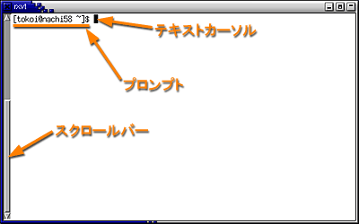
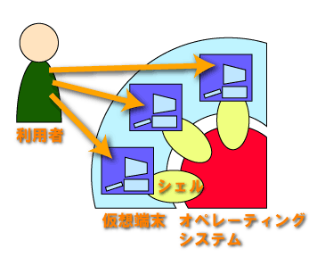

パスワードの変更やメールの転送設定についての説明をここに用意しています。
それでは、今日の本題に入ります。ターミナルを開いてください。

ターミナル (rxvt) を起動すると、rxvt はシェルを起動して、ウィンドウ内にその出力データを表示します。シェルとは利用者の命令をコンピュータ（オペレーティングシステム）に伝達するインタプリタと呼ばれる種類のソフトウェアで、利用者からコマンド（命令）が与えられるのを待っています。 現在使用しているシェルは csh（Ｃシェル）というものです（実際にはその拡張版の tcsh が動いています）。このようなソフトウェアには、他に sh、bash、ksh、zsh などがあります。
“[ログイン名@コンピュータ名 ~]$”という表示は csh がコマンド待ち状態であることを示す プロンプト（入力促進符号）で、その右側にテキストカーソルが表示されています。プロンプトは変更可能です。以降ではこのプロンプトを "%" １個で表します。
このターミナルは仮想端末と呼ばれるソフトウェアで、このウィンドウひとつが１台の端末装置のように振舞います。ターミナルを複数動かせば、それぞれのウィンドウで別々の仕事をすることができます。このような仮想端末プログラムには、rxvt の他に X Window System 標準の xterm、xterm を日本語化した kterm、GNOME 標準の gnome-terminal、背景に画像を仕込める Eterm など、いろいろなものがあります。
シェルはオペレーティングシステムのユーザインタフェースとして働きます。利用者はシェルを通じてコンピュータを操作します。

シェルに対して次のような操作を行ってみてください（下線部）。
| コマンドの実行 | |
|---|---|
| キーボードから date とタイプし、 改行（Enterをタイプ）する。 コマンドは改行することによって 実行を開始する。date は現在時刻を出力するコマンド。 |
% date[Enter] ↓実行結果（出力） 1998年 5月17日(日曜日) 03時38分38秒 JST % ←次のコマンド待ち状態 |
| 存在しないコマンドを実行するとエラーになる。abcdef というコマンドは存在しない。 | % abcdef[Enter] ↓これはエラーメッセージ abcdef: コマンドが見つかりません． % ←次のコマンド待ち状態 |
コマンドにオプションを付けて実行することで、 その動作を変えることができる場合があります。
| コマンドのオプション | |
|---|---|
| date の "-u" はグリニッジ標準時で出力するオプション。 コマンドとオプションの間は空白をあける （続けると "data-u"という別のコマンドだと解釈されてしまう）。 |
% date -u[Enter] ↓グリニッジ標準時になる 1998年 5月16日(土曜日) 18時38分40秒 GMT % |
ココマンドの実行に必要な情報を、引数（ひきすう）で与える場合もあります。
| コマンドの引数 | |
|---|---|
| cal コマンドを引数なしで実行すると今月のカレンダーを表示する。 |
% cal[Enter]
1998 年 5 月
日 月 火 水 木 金 土
1 2
3 4 5 6 7 8 9
10 11 12 13 14 15 16
17 18 19 20 21 22 23
24 25 26 27 28 29 30
31
%
|
| コマンドには引数を付けることができるものがある。 引数はコマンドの実行に必要な情報を与えるときなどに使う。 cal コマンドの引数に月と年を与えて実行する。 |
% cal 7 1961[Enter]
1961 年 7 月
日 月 火 水 木 金 土
1
2 3 4 5 6 7 8
9 10 11 12 13 14 15
16 17 18 19 20 21 22
23 24 25 26 27 28 29
30 31
%
|
- date
- 現在時刻を出力します。
- cal
- カレンダーを出力します。
">" という文字を使えば、コマンドの出力を画面（ターミナルのウィンドウ)に表示する代わりに、ファイルに保存することができます。
- ファイル
- コンピュータの記憶装置のうち、メモリのような内部記憶装置は電源を切ったりすると普通は記憶しているデータも消えてしまうため、とっておきたいデータはハードディスクやフロッピーディスクなどを外部記憶装置に保存します。ファイルは保存しているデータに名前を付けて、そのデータを容易に見つけ出せるようにしたものです。
| コマンド出力の保存 | |
|---|---|
| date コマンドを実行し、 出力を a というファイルに保存する。出力はファイル a に入るため、画面には表示されない。 |
% date > a[Enter] （何も出力されない） |
| cal コマンドを実行し、 出力を b というファイルに保存する。これも出力がファイル b に入るため、画面には表示されない。 |
% cal > b[Enter] （何も出力されない） |
| ls コマンドを実行する。 a と b という２つのファイルができている。ls は現在所有しているファイルの名前をリストアップする。 |
% ls[Enter] ～ a ～ b ～ |
| a というファイルの内容を出力。 |
% cat a[Enter] 1998年 5月19日(火曜日) 13時56分59秒 JST |
| b というファイルの内容を出力。cat は引数に指定したファイルの内容を出力するコマンド。 |
% cat b[Enter]
1998 年 5 月
日 月 火 水 木 金 土
1 2
3 4 5 6 7 8 9
10 11 12 13 14 15 16
17 18 19 20 21 22 23
24 25 26 27 28 29 30
31
|
| ファイル a の内容を画面に出力する代りに、 ファイル b に入れる。 |
% cat a > b[Enter] |
| それまでのファイル b の内容（カレンダ）は失われ、 代りに a と同じ内容が入っている （ファイルのコピー）。 |
% cat a[Enter] 1998年 5月19日(火曜日) 13時56分59秒 JST % cat b[Enter] 1998年 5月19日(火曜日) 13時56分59秒 JST |
| ">" の代りに ">>" を使う。 |
% date >> b[Enter] |
| それまでの内容の後ろに新しい内容が追加されている。 |
% cat b[Enter] 1998年 5月19日(火曜日) 13時56分59秒 JST 1998年 5月19日(火曜日) 14時24分24秒 JST |
- ">" という記号の役割
- ">" という文字は、コマンドの出力を画面に表示する代りに、その右側に書かれたファイルに保存します。それまでそのファイルの中に入っていた内容は失われます。この操作を標準出力のリダイレクトといいます。
- ">>"
- ">>" はコマンドの出力を既にファイルの中に入っている内容の後ろに追加します。
- ls
- ファイル名の一覧を表示します (list)。
- cat
- ファイルの中身を表示します。このコマンドは引数に複数のファイルを指定でき、それらを連結 (concatenete) して出力します。
コマンドの中には実行開始後にキーボードからのデータ入力を必要とするものがあります。
| コマンドへのデータ入力 | |
|---|---|
| bc コマンドを実行すると、プロンプトは表示されない。ｊこれは
bc コマンドがデータの入力を待っている状態。
コマンドは入力されたデータを加工し、結果を出力する。 結果は通常画面に表示される。 コマンドへのデータ入力を終了するには、 Ctrl-D をタイプ（Ctrl キーを押しながら D をタイプ）する。 これは入力データの終りを意味する。 bc コマンドは入力データとして与えられた数式を計算して、 結果を出力する“電卓”コマンドである。 |
% bc[Enter] 2+3[Enter] ←データ入力（プロンプトは出ない） 5 ←出力 Ctrl-D ←入力終了 % ←プロンプトが出てくる |
ファイルに保存されているデータをデータ入力に使うこともできます。
| ファイルからの入力 | |
|---|---|
| cat コマンドを引数なしで実行すると、 bc 同様キーボードからのデータ入力を待つ。 適当な文字をタイプすれば、 改行する度にそれがおうむ返しに画面に出力される。 |
% cat[Enter] saitou[Enter] saitou suzuki[Enter] suzuki tanaka[Enter] tanaka Ctrl-D |
| 同様に cat を引数なしで実行し、 その出力を c というファイルに保存する。 |
% cat > c[Enter] 2+3[Enter] 4*5+7[Enter] (3+4)*29[Enter] Ctrl-D |
| ファイル c の内容を cat コマンドの入力データに使う。 ファイル c の内容がそのまま表示される。 "<" の向きに注意。 |
% cat < c[Enter] 2+3 4*5+7 (3+4)*29 |
| ファイル c の内容を bc コマンドの入力データに使う。 ファイル c の内容の計算結果が出力される。 |
% bc < c[Enter] 5 27 203 |
引数を指定せずに cat を実行すると、標準入力に与えられたデータをそのまま標準出力に出力します（"cat < c" と "cat c" の結果は同じ）。
- "<" という記号の役割
- コマンドへのデータ入力を、 キーボードをタイプする代りにファイルから行います。 この操作を標準入力のリダイレクトといいます。
あるコマンドの出力を別のコマンドの入力データに使うこともできます。
| コマンドの出力を別のコマンドに入力 | |
|---|---|
| このようにしても同じ結果が得られる。 この場合は cat コマンドの出力をそのまま bc コマンドの入力に流し込んでいる。これを「パイプ」と言う。 |
% cat c | bc[Enter] 5 (↑２つ↑のコマンドが同時に動く) 27 203 |
- "|" という記号の役割
- コマンドの出力を別のプログラムに入力します。この機能をパイプといいます。
- bc
- 標準入力から与えら得た式を計算し、結果を標準出力に出力します。
あるファイルと同じ内容のファイルを作成する（ファイルの複写）には、cp コマンドを使います。
| cp ～ファイルのコピー | |
|---|---|
| ファイル a を作る。 |
% date > a[Enter] |
| a をコピーして b という別のファイルを作る。すでに b が存在した場合、その内容は失われる。 |
% cp a b[Enter] |
| a と b の中身を見てみる。内容は同じ。 |
% cat a[Enter] 1998年 5月19日(火曜日) 19時26分38秒 JST % cat b[Enter] 1998年 5月19日(火曜日) 19時26分38秒 JST ↑b は a と同じ内容 |
ファイル名の変更には mv コマンドを使います。
| mv ～ファイルの移動（名前の変更） | |
|---|---|
| a、b という２つのファイルがあるとする（上で作ったのであるはず）。 |
% ls[Enter] ～ a ～ b ～ |
| a を x に移動する。a がなくなり、x ができる。 |
% mv a x[Enter] % ls[Enter] ～ b ～ x ～ ←a が無くなり x ができる |
| b を x に移動する。それまで x に入っていた内容（a の内容）は失われる。 |
% mv b x[Enter] % ls[Enter] ～ x ～ ←b が無くなる |
不要なファイルを削除するには、rm コマンドを使います。
| rm ～ファイルの削除 | |
|---|---|
| ファイル x を削除する。 |
% rm x[Enter] |
| 複数のファイルを指定しても良い。 |
% rm a b[Enter] |
- cp
- ファイルを複写します（同じ内容の別のファイルを作ります）。
- mv
- ファイルの名前を変えたり、移動したりします。
- rm
- ファイルを削除します。
"*"や"?" などの特殊文字を使って、複数のファイルを一括して指定することができます。このような文字はワイルドカードと呼ばれます。
- *
- 任意の文字列にマッチする
- ?
- 任意の１文字にマッチする
- [ ]
- [ ] 内のいずれか１文字にマッチする
- a*
- a から始まるファイル名
- a*c
- 先頭が a で末尾が c のファイル名
- ???
- ３文字のファイル名
- d[135]
- d1、d3、d5 の３つのファイル
- [a-z]*
- 先頭が小文字のファイル名
- [^0-9]*
- 先頭が数字ではないファイル名
| ワイルドカードの使用例 | |
|---|---|
| a で始まるファイルの詳細を表示する。 ls コマンドの -l オプションは詳細表示。 |
% ls -l a*[Enter] |
| 末尾が ".doc" のファイルを連結して表示する。 |
% cat *.doc[Enter] |
| d1.bak、d2.bak、d3.bak の３つのファイルを削除する。 |
% rm d[1-3].bak[Enter] |
コンピュータのファイルを保存するためのメカニズムのことを、 ファイルシステムと呼びます。 このコンピュータのファイルシステムには、 非常にたくさんのファイルが保存されています。 仮に、それらが『同じ場所』にあったとすると、 目的のファイルを見つけるのがかなり大変になります。 他人と同じファイル名を付けないようにも気をつけなければならず、 とっても面倒なことになります。
そこで、これらのファイルを用途や所有者ごとに分類・整理して保存するために、 UNIX のファイルシステムは図のような木構造になっています。
一番根本（最上位）の "/" は ルートディレクトリと呼び、 ファイルシステムの起点になります。 その下に bin、etc、usr などのサブディレクトリがあり、 usr の下にもさらに bin、etc、local などのサブディレクトリがあります。
ターミナルで pwd コマンドを実行すれば、そのターミナル内で動いているシェルのカレントディレクトリ（シェルが現在処理の対象としているディレクトリ、作業ディレクトリ）を表示します。
| pwd ～カレントディレクトリの表示 |
|---|
% pwd[Enter] /home/s3/s075000 |
ディレクトリの階層は "/" で区切ります。ひとつのファイルやディレクトリを表すとき、それをルートディレクトリを起点にしたパス（経路）で表す場合を、絶対パス、カレントディレクトリを起点にしたパスで表す場合を相対パスと呼びます。上図の Desktop というディレクトリは、絶対パスだと /home/s3/s075000/Desktop と表されますが、/home というディレクトリからの相対パスで表せば s3/s075000/Desktop となります。
ターミナルを開いた直後のディレクトリは、 そのコンピュータにログインした利用者が所有するディレクトリで、 ホームディレクトリと呼びます。利用者のファイルは原則としてこのホームディレクトリ以下に置かれます。
そのほかのほとんどのディレクトリは、他人のホームディレクトリを含めて、 利用者が勝手にファイルを作成したりすることはできないようになっています。 例外的に /tmp などは誰でもファイルを置くことができますが、 このディレクトリに置いたファイルは、 コンピュータの電源を切ると無くなってしまう場合があります。
Windows 2000 を起動したとき、ホームディレクトリは H: ドライブになります。
なお、このコンピュータの /home/s1 ～ /home/s4 以下は、 実際には目の前にあるコンピュータ（ワークステーション）ではなく、サーバと呼ばれる別のコンピュータ上にあり、LAN を使って共有しています。
| cd ～カレントディレクトリの移動 | |
|---|---|
| カレントディレクトリを表示する。たぶんホームディレクトリ。"s075000" はあなたのログイン名だと思ってください。 |
% pwd[Enter] /home/s3/s075000 ←カレントディレクトリ |
| ひとつ上のディレクトリに移動する。".." はひとつ上のディレクトリ（親ディレクトリ）を示す。このディレクトリには自分のホームディレクトリ "s075000" が含まれる。 |
% cd ..[Enter] ←一つ上に上がる % pwd[Enter] /home/s3 |
| カレントディレクトリにある "s075000" というディレクトリに移動する。ホームディレクトリに戻る。 |
% cd s075000[Enter] ←一つ下に降りる % pwd[Enter] /home/s3/s075000 |
| ルートディレクトリに移動する。"/" はルートディレクトリを示す。 |
% cd /[Enter] ←ルートディレクトリ % ls[Enter] bin boot etc ～ tmp usr |
| カレントディレクトリ内にあるディレクトリ tmp に移動する。カレントディレクトリを起点にしたディレクトリの指定を相対パスと呼ぶ。 |
% cd tmp[Enter] ←相対パス % pwd[Enter] /tmp |
| ディレクトリの指定が "/" で始まっていれば、これはルートディレクトリを起点にした指定になる。これを絶対パスと呼ぶ。 |
% cd /usr/bin[Enter] ←絶対パス % pwd[Enter] /usr/bin |
| cd コマンドに引数を指定しなければホームディレクトリに戻る。 |
% cd[Enter] ←引数なし % pwd[Enter] /home/s3/s075000 ←ホームディレクトリ |
"." はカレントディレクトリを意味します。また ".." がカレントディレクトリの親ディレクトリ（ひとつ上のディレクトリ）を示します。カレントディレクトリがホームディレクトリ (上図では /home/s3/s075000) にあるとき、.. は /home/s3、../.. は /home、../../s1 は /home/s1 を表します。
| mkdir ～ディレクトリの作成 | |
|---|---|
| ３つのファイル a, b, c を作る（内容は空）。touch コマンドはすでにあるファイルの修正日時だけを、 コマンド実行時の時間に設定する。 ファイルがなければ空のファイルを作る。 |
% touch a b c[Enter] % ls[Enter] ～ a ～ b ～ c ～ |
| mkdir でカレントディレクトリに d というディレクトリを作る。その後、ファイルの一覧を見てみる。 |
% mkdir d[Enter] % ls[Enter] ～ a ～ b ～ c ～ d ～ ← d ができる |
| ls コマンドに -F オプションを付けると、 ファイルの種類が分かる（後ろに "/" が付いていればディレクトリ）。 |
% ls -F[Enter] ～ a ～ b ～ c ～ d/ ～ d はディレクトリ↑ |
| ls の引数に普通のファイルを指定すると、そのファイルが（あれば）表示される。
ls の引数にディレクトリを指定すると、 そのディレクトリの中にあるファイルの一覧が表示される （d は作ったばかりなので、中身は空）。 |
% ls a[Enter] a % ls d[Enter] （何も表示されない） |
| d に移動する（カレントディレクトリを移す）。ここでファイルの一覧を見る。d は空なのでやはり何も表示されない。 |
% cd d[Enter] % ls[Enter] （何も表示されない） |
| "." はカレントディレクトリを示す。 |
% ls .[Enter] （何も表示されない） |
| ".." は上位のディレクトリを示す （但し、"/"（ルートディレクトリ）の .. は "/"）。 |
% ls ..[Enter] ～ a ～ b ～ c ～ d ～ ←上のディレクトリが表示される |
| ディレクトリへの cp/mv | |
|---|---|
| ファイル a をディレクトリ d にコピーする。 ディレクトリ d 内に a ができる。 |
% cd[Enter] ←ホームディレクトリに戻る % cp a d[Enter] % ls d[Enter] a |
| ファイル b、c をディレクトリ d に移動する。 カレントディレクトリから b、c がなくなり、 ディレクトリ d 内に b、c ができる。 |
% mv b c d[Enter] % ls[Enter] ～ a ～ d ～ ←b、c が無い % ls d[Enter] ～ a ～ b ～ c ～ ←b、c はこっちに移った |
| もちろん、コピー／移動先でのファイル名も指定できる。 |
% cp a d/e[Enter] % ls d[Enter] ～ a ～ b ～ c ～ e ～ % cat d/a[Enter] % cat d/e[Enter] d/a と d/e の中身は同じはず↑ |
| rmdir ～ディレクトリの削除 | |
|---|---|
| ディレクトリ d を削除する。 d が空ではないので、削除できない。 |
% rmdir d[Enter] d: ディレクトリが空ではありません |
| ディレクトリ d の中を空にしてから、 d を削除する。
a、e は削除する。 b、c は一つ上のディレクトリ（".."、 親ディレクトリ）に移動する。 |
% cd d[Enter] % rm a e[Enter] % mv b c ..[Enter] % ls[Enter] （何も表示されない） % cd ..[Enter] % rmdir d[Enter] （何も表示されない） % ls[Enter] ～ a ～ b ～ c ～ ←d が削除された |
| ディレクトリ単位のコピー／移動 | |
|---|---|
| ディレクトリ d を作り、 そこにファイル a、b、c
をコピーする。
ディレクトリ d 全体を e というディレクトリにコピーする。 この場合、cp コマンドに -r というオプションを付ける。 |
% mkdir d[Enter] % cp a b c d[Enter] % cp -r d e[Enter] % ls d e[Enter] d: a b c e: a b c ↑d と e に同じファイルが入っている |
| ディレクトリ e を f に移動する。 これは単にディレクトリ名が変わっただけ。
f を d に移動する。 d というディレクトリが既にあるので、 f はその中に入る。 |
% ls -F[Enter] ～ a ～ b ～ c ～ d/ ～ e/ ～ % mv e f[Enter] % ls -F[Enter] ～ a ～ b ～ c ～ d/ ～ f/ ～ % mv e f[Enter] % ls -F[Enter] ～ a ～ b ～ c ～ d/ ～ ←f が無い % ls -F d[Enter] a b c f/ ←こっちに移動した |
- cd
- カレントディレクトリを移動します。
- mkdir
- ディレクトリを作成します。
- rmdir
- ディレクトリを削除します。
コマンドの使い方などを調べるときには、オンラインマニュアルを使います。これには（伝統の）man コマンドと、info コマンドがあります。man コマンドは、調べたいコマンドを引数に指定します。
| man コマンドで ls コマンドの使い方を調べる |
|---|
% man ls[Enter] |
オンラインマニュアルの表示には、more（あるいは、その拡張版である less）というページャ（ファイル閲覧用のプログラム）が使用されます。これは、次のキーで操作できます。これらも man コマンドで使い方の詳細を調べることができます。
| ページャのキー操作 | |
|---|---|
| １画面分次に進む | スペース |
| １画面分前に戻る | b |
| １行進む | [Enter] |
| 現在位置から下方に向かって word という語句があるところを検索する | /word |
| 前回の検索を繰り返す | n |
| 前回の検索を反対方向に向かって繰り返す | N |
| ページャを終了する | q |
more や less コマンドはファイルの中身を見るのに使われます。
| less コマンドで ファイル zyz の中身を見る |
|---|
% less xyz[Enter] |
ls -l のように、出力が多くて画面が流れていってしまうような場合は、パイプ (|)を使ってその出力を more や less に入力します。
| ls コマンドの出力を less を通して見る |
|---|
% ls -l | less[Enter] |
info コマンドは起動するとメニューが現れるので、調べたいコマンドのところにカーソルを移動して、 Enter をタイプします。カーソルの移動には矢印キーが使えます。
（１）cal コマンドを使って自分の誕生月のカレンダーを表示し、 自分の誕生日の曜日を確かめてみてください。 また "cal 1998" のように引数に月を指定しなかった場合は 何が表示されるか確かめてみてください。
（２）ls コマンドは通常アルファベット順にファイル名を出力します。これをファイルを作成した時間の順に出力するオプションを、man コマンドを使って調べてください。
（３）ls コマンドに -a オプションをつけた場合と付けなかった場合は何が違うか、オンラインマニュアルや ls の出力を見て考えてください。
（４）ls コマンドに -l オプションをつけたときに表示される各行の、先頭の 10 文字の意味を答えてください。また、これを変更するコマンドが何か調べてください。
（５）wc コマンドは標準入力に与えられたデータの文字数、単語数、行数を数えるコマンドです。このコマンドを ls コマンドと組み合わせて、/usr/bin ディレクトリ（ここにはよく使うコマンドが置かれています）にあるコマンドの数を数えてください。